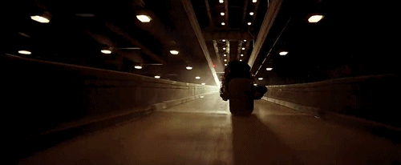
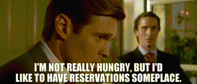

"He's not our hero. He's a silent guaridan, a watchful protector, a dark knight.".
"I'm not really hungry, but I'd like to have reservations someplace."
"I believe there’s a hero in all of us…that keeps us honest…gives us strength…makes us noble…and finally allows us to die with pride, even though sometimes we have to be steady and give up the thing we want the most – even our dreams."